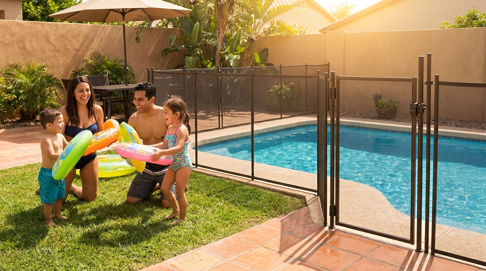
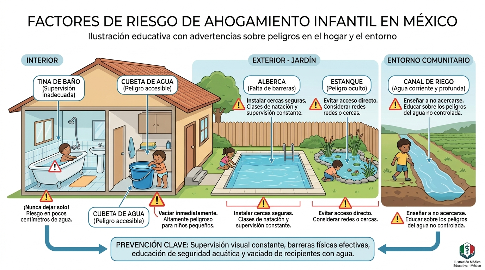
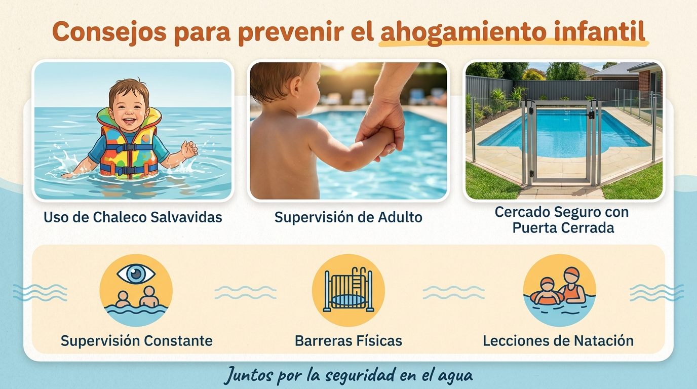
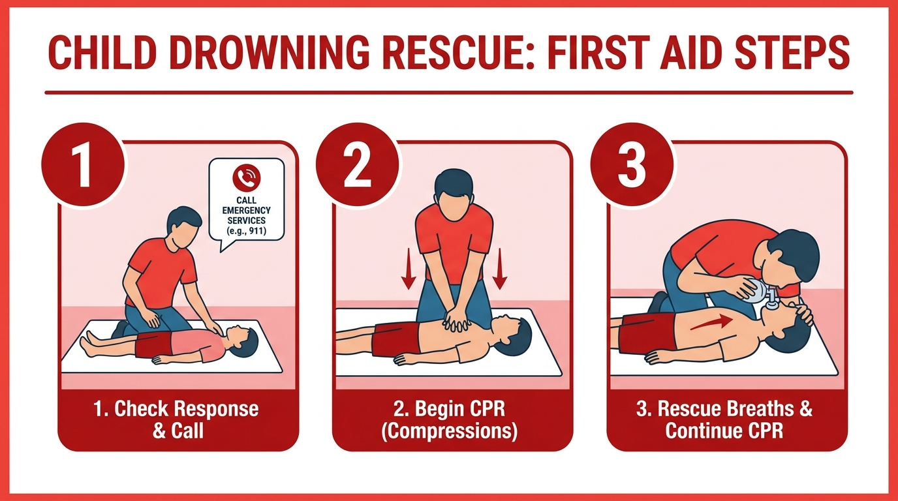

Cada año, más de 300,000 personas mueren por ahogamiento en el mundo. Casi la mitad son menores de 29 años, y una cuarta parte son niños menores de 5 años. En México, es una de las principales causas de muerte accidental en niños. Y lo más preocupante: la gran mayoría de estos casos son prevenibles.
Los niños menores de 5 años tienen el mayor riesgo de ahogamiento por varias razones:
Según la Organización Mundial de la Salud (OMS), los niños de 1 a 4 años son los más afectados globally, y el ahogamiento es la cuarta causa de muerte en este grupo de edad. En niños de 5 a 14 años, ocupa el tercer lugar.

Contrary a lo que muchos creen, no solo ocurren en piscinas o playas. La mayoría de los ahogamientos en niños pequeños ocurren en el hogar o muy cerca de él:
En México, más del 80% de los ahogamientos en niños ocurren a menos de 20 metros de la vivienda familiar, según datos del sector salud.
La OMS y organizaciones como UNICEF recomiendan un enfoque de múltiples capas de protección. Ninguna medida por sí sola es suficiente, pero juntas reducen enormemente el riesgo.

Esta es la medida más importante. Un adulto debe estar siempre a un brazo de distancia de cualquier niño menor de 5 años cuando esté cerca del agua.
Instalar barreras que impidan el acceso al agua es una de las intervenciones más efectivas según la OMS:
A partir de los 4 años, las lecciones de natación formales reducen el riesgo de ahogamiento. Sin embargo, esto no sustituye la supervisión. La OMS advierte que las lecciones deben incluir también educación en seguridad acuática, no solo técnica.
Saber actuar cuando alguien se está ahogando puede marcar la diferencia entre la vida y la muerte. La reanimación cardiopulmonar (RCP) realizada en los primeros minutos duplica las posibilidades de supervivencia.
Si encuentras a un niño inconsciente en el agua, actúa de inmediato:

El ahogamiento es una emergencia tiempo-dependiente. Cada segundo cuenta. Un niño que dejó de respirar por ahogamiento tiene su mejor oportunidad si recibe RCP en los primeros 4 minutos.
La prevención del ahogamiento infantil no es solo responsabilidad de los padres. Es un compromiso de toda la comunidad:
Las vacaciones de verano son tiempo de convivencia familiar y diversión, pero también son la temporada de mayor riesgo de ahogamiento infantil. La buena noticia es que la gran mayoría de estos incidentes son prevenibles.
Este 2026, comprométete con la seguridad de los pequeños:
Porque un minuto de distracción puede cambiar una vida para siempre, pero también un minuto de atención puede salvar una.
Fuentes: Organización Mundial de la Salud (OMS) — Informe mundial sobre ahogamientos, 2024; UNICEF; Secretaría de Salud de México; SciELO México — Boletín Médico del Hospital Infantil de México.
Compartir: